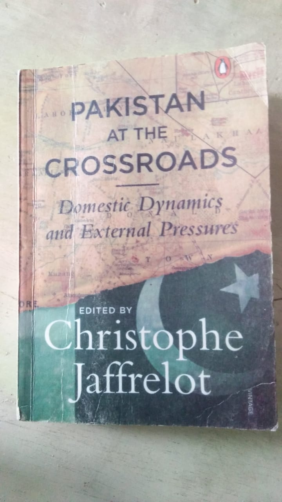

An effrot to create a personal room to share our thoughts specially flashbacks of our experiences to the people out there in order to provide them the opportunity to jel their emotions with ours thereby creating a space available to all.
"You once told me that memory is a choice. But if you were god, you'd know it's a flood."
_Ocean Vuong, On Earth We're Briefly Gorgeous
Every day, a new memory like flood pop-ups from nowhere and fills the mind. A tiny stimuli can do wonders. Let me share with you our day to day stream of consciousness:memories of people really close to our heart.
Day 1:
Being a literature student, I'm always delighted to read new and new books including novels, fictions, and
political ones. While reading books, one is bombarded with thoughts. The thought is catalyzed by either a word, a
sentence or an idea. Similar happened to me when I saw the word " Establishment". It took me back to my university
life. My eyes were on the words, but my mind went to the university classes where we used to sit together,
listened to the teachers giving lectures and above all, our group members who would always try to crack jokes that
would make everyone laugh. The word " Establishment" took me to another bombastic word "
Antidisestablishmentarianism" just because one of our teachers was fond of bold words used in exams. We were not
into quality of the paper or the content but into finding those words with more letters and those words should
seem having good literary trope. Same was the case with the teacher, he would give maximum marks to those who have
underlined most of the bigger words despite the words not fitting into sentences and also not giving a coherent
meaning. Anyhow, even a word can embark us on a journey that puts a smile on our face and the memory becomes that
much fresh that it happened yesterday. You miss your friends and now you do not have the book in your hand but the
phone with which you contact them and remind them that did you sneeze because I remembered you.
_Appoucho

Day 2:
Sitting with friends in summer days, gossiping, complaining about the heat waves, thinking of travelling to a
place that soothes you, calms you, offers you real company in
exchange because often times you are in a group with people without their true company. Suddenly while discussing
trips to beautiful places, the scenic image of Shangrila,in my hometown Skardu (the place I miss the most)
fills my mind. The lush green fields with gushing
water channel having purity at its peak. Mountainous region covered with white snow makes us think how nature
appeases us in every way. Nature also teaches us that the more we care about it, the more it cares about us.
Destroy the nature, the nature destroys us.
_Appoucho